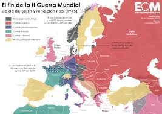
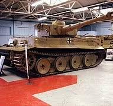
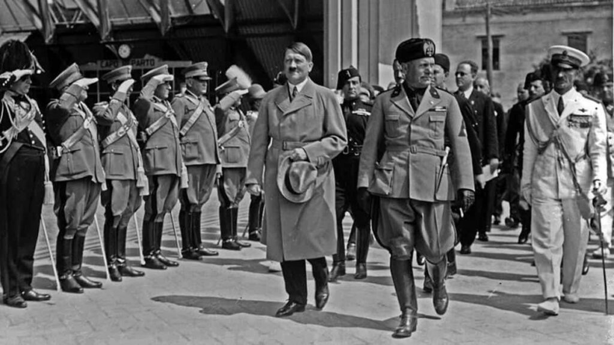
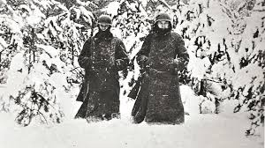

Se suele decir muchas causas sobre Alemania y de Hitler y sobretodo estos días sobre las personas pertenecientes al Partido Socialista Obrero Aleman o Deutsche Nationalsozialistische Arbeiterpartei, de donde se saco la palabra "Nazi", sobre esto se podria hablar mucho entre otros, como por que la gente voto a Hitler o como sobrevivieron a la gran depresión que ocurrio en 1929, etc, aunque varias se respondend una a la otra. Sino que aqui estamos por los mitos, por lo que bueno empezare con uno de los mas famosos y es uno que creo las peliculas de hollywood y que todos hemos creido alguna vez y es el tema de que Hitler fue detenido por sus "conquistas" al principio nada mas empezarlas con el ancluss o el asunto de checoslovaquia con los sudetes y que hubo una respuesta total de los aliados incluido EEUU pero no fue así si no que fue al reves, Alemania recibio una queja diplomatica por remilitarizar su territorio con frontera con Francia pero ante sus expansiones no hicieron nada hasta que fue tarde, por ejemplo el ancluss, que fue la anexion de Austria por Alemania, se hizo y nadie dijo nada, Chechoslovaquia por ejemplo fue un territorio que fue anexionado, sin tampoco muchas objeciones, Reino Unido le dio la razón a Alemania sobre la cuestion de Checoslovaquia, es decir Reino Unido considero que los Sudetes eran territorio Aleman, fue tras la declaración de guerra a Polonia el 1 de septiembre de 1939 cuando entraron en guerra y tras el 23 de agosto de 1939 se inicio la segunda guerra mundial real con la declaración de Alemania de la guerra a la URSS.
Se tiene a Hitler como un gran personaje de la historia, un gran estratega y si algo de cierto tiene, supo aprovechar las oportunidades muy bien pero no fue ni tan gran estratega ni nada, simplemente tuvo varios golpes de suerte que luego se acabaron, ya que si investigas Hitler repasaba mil veces, era muy de mapas, pero no entendia que cada movimiento en el mapa significa mover recursos,combustible y hombres lo cual se vio en el frente ruso donde perdieron, también debido a las tacticas de guerra sucia rusa pero no solo aquí si no en otros frentes.
Uno al pensar en Alemania y tanques suele pensar en los panzers, pero confomre avanzaba la guerra se desarrollo otro, el temido tiger fue una serie de tanques utilizado por los alemanes durante la segunda guerra mundial y era uno de los temores mas grandes en el campo de batalla o eso nos ha llegado ya que si echamos la vista atras y miramos era un agujero negro de combustible, es decir, tenia mucho blindaje, si pero para mover eso hacia falta mucho combustible, cosa que ala hora de su primera implementación no fue muy bueno ya que fue desarrollado en 1941 y en esa fase de la guerra Alemania por lo ya dicho estaba muy falta de combustible y si te pones a investigar no era muy bueno a largas distancias era mas fuerte en distancias cercanas por lo que no era tan fuerte como se nos dice
El pacto de Acero fue un pacto firmado entre Alemania y Italia fue un pacto hecho ya que estas dos naciones naciones, se llevaban bastante bien, con este pacto se ayudarian en caso de cuestiones militares. lo que pasa aquí es que este pacto también conllevaba ayuda en las guerras, aunque dicho pacto también fue firmado por Italia con la condición de que no habria conflictos en un tiempo debido a que Italia estaba muy por detras de los otros países europeos y Alemania traiciono esto al declararle la guerra a Polonia en el 39 ya que esta rechazo entregarle Danzig a Alemania y esta intento arrastrar a Italia. Por eso el titulo ya que si, se firmo el pacto de Acero pero en un principio Mussolini el Duce, se le intento de convencer de que no entrara y se traiciono a Italia por eso ya que Italia acepto el trato por eso.
Se suele decir que el principal factor de la derrota alemana fue el invierno y no es asi, fue un simple factor que junto a que Alemania estaba siendo atacada por multiples frentes, el desembarco de Normandia, la caida de Mussolini, la poca y mala planificación alemana provocada por Hitler y demas, no solo fue el invierno el que derroto a Alemania fue todo esto.
